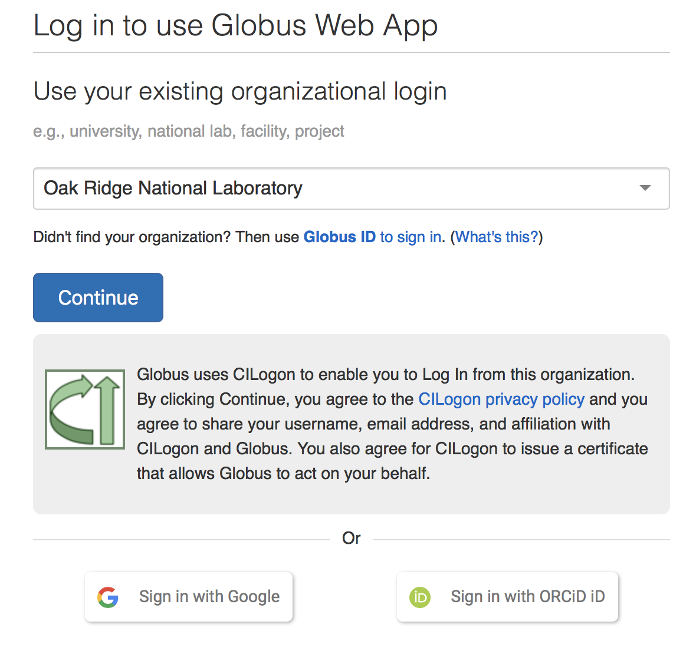
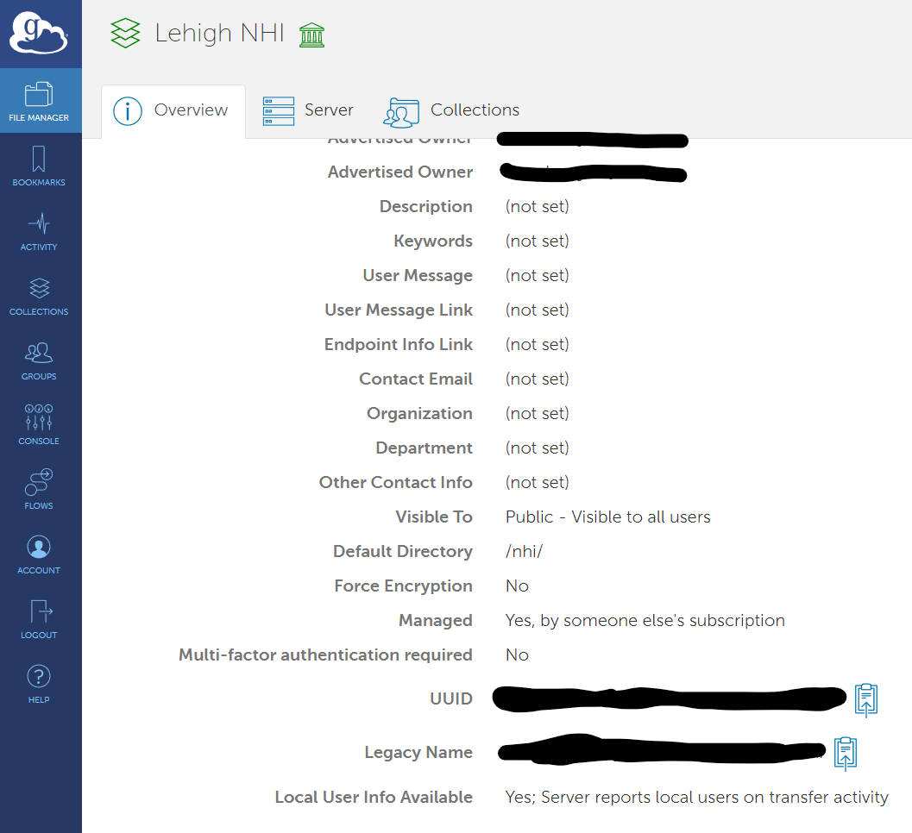

Installing DataFed
Contents
Installing DataFed#
Getting Started#
Please follow this guide to get started with DataFed
Get a Globus account#
Follow only step 1 of instructions here to get a Globus account.
Get a Globus ID#
Ensure that your globus ID is linked with your institutional ID in your globus account:
Log into globus.org
Click on
Accounton the left hand pane
Select the
Identitiestab in the window that opens up
You should see (at least these) two identities:
One from your home institution (that is listed as primary with a crown)
Globus ID (your_username@globusid.org)
If you do not see the
Globus ID, click onLink another identity. SelectGlobus IDand link this ID.
Register at DataFed#
Once you have a Globus ID, visit the DataFed web portal.
Click on the
Log in / Registerbutton on the top right of the page.
Follow the steps to register yourself with DataFed.
Though you can log into the DataFed web portal with your institution’s credentials, you will need the username and password you set up during your registration for scripting.
Note
Your institutional credentials are not the same as your DataFed credentials. The latter is only required for using DataFed via python / CLI.
Get data allocations#
As the name suggests, a data allocation is just the data storage space that users and projects can use to store and share data of their own. Though you can start to use DataFed at this point to view and get publicly shared data, it would not be possible to create or manipulate data of your own unless you have a data allocation in a DataFed data repository.
You can request a small allocation from Prof. Agar. If you would like to use DataFed for your research please email Prof. Agar
Install a Globus Endpoint#
You will need a Globus endpoint on every machine where you intend to download / upload data.
Most computing facilities already have a Globus endpoint
Using Personal Computers and Workstations#
Install Globus Personal Connect
When conducting the install make note of the endpoint name
Log into Globus: Drexel does not have an organizational login, you may choose to either Sign in with Google or Sign in with ORCiD iD.

Check your managed endpoints to make sure your endpoint is visible.
You want to copy the UUID - this is the ID to the endpoint

Installing DataFed
pip install datafed
Note, if you used the requirements.txt file this was already installed. You can just verify that it was installed by running pip install command
Ensure the bin Directory is in the Path
If you do not see an error when you type datafed in your terminal, you may skip this step.
If you encounter errors stating that datafed was an unknown command, you would need to add DataFed to your path.
First, you would need to find where datafed was installed. For example, on some compute clusters, datafed was installed into directories such as
~/.local/MACHINE_NAME/PREFIXES-anaconda-SUFFIXES/binNext, add DataFed to the
PATHvariable.
Here is an external guide on adding Python to the PATH on Windows machines
Basic Configuration
Type the following command into shell:
datafed setup
It will prompt you for your username and password.
Enter the credentials you set up when registering for an account on DataFed (not your institutional credentials you use to log into the machine)
Add the Globus endpoint specific to this machine / file-system as the default endpoint via:
datafed ep default set endpoint_name_here
Note
If you are using Globus Connect Personal, visit the Settings or Preferences of the application to inspect which folders Globus has write access to. Consider adding or removing directories to suit your needs.
Checking DataFed Installation and Configuration#
# Import packages
import os
import getpass
import subprocess
from platform import platform
import sys
try:
datapath = os.mkdir("./datapath")
except:
datapath = "./datapath"
0. Machine information:#
Python version:
sys.version_info
sys.version_info(major=3, minor=10, micro=0, releaselevel='final', serial=0)
platform()
'Windows-10-10.0.19044-SP0'
1. Verify DataFed installation:#
try:
# This package is not part of anaconda and may need to be installed.
from datafed.CommandLib import API
except ImportError:
print("datafed not found. Installing from pip.")
subprocess.call([sys.executable, "-m", "pip", "install", "datafed"])
from datafed.CommandLib import API
from datafed import version as df_ver
if not df_ver.startswith("1.4"):
print("Attempting to update DataFed.")
subprocess.call([sys.executable, "-m", "pip", "install", "--upgrade", "datafed"])
print(
"Please restart the python kernel or upgrade manually to V 1.1.0:1 if you are repeatedly seeing this message via"
"\n\tpip install --upgrade datafed"
)
else:
df_api = API()
print("Success! You have DataFed: " + df_ver)
Success! You have DataFed: 1.4.0:0
2. Verify user authentication:#
if df_api.getAuthUser():
print(
"Success! You have been authenticated into DataFed as: " + df_api.getAuthUser()
)
else:
print("You have not authenticated into DataFed Client")
print(
'Please follow instructions in the "Basic Configuration" section in the link below to authenticate yourself:'
)
print("https://ornl.github.io/DataFed/user/client/install.html#basic-configuration")
Success! You have been authenticated into DataFed as: u/jca318
3. Ensure Globus Endpoint is set:#
if not df_api.endpointDefaultGet():
print("Please follow instructions in the link below to find your Globus Endpoint:")
print(
"https://ornl.github.io/DataFed/system/getting_started.html#install-identify-globus-endpoint"
)
endpoint = input(
"\nPlease enter either the Endpoint UUID or Legacy Name for your Globus Endpoint: "
)
df_api.endpointDefaultSet(endpoint)
print("Your default Globus Endpoint in DataFed is:\n" + df_api.endpointDefaultGet())
Your default Globus Endpoint in DataFed is:
f134f91a-572a-11ed-ba55-d5fb255a47cc
4. Test Globus Endpoint:#
This will make sure you have write access to the folder
# This is a dataGet Command
dget_resp = df_api.dataGet("d/35437908", os.path.abspath(datapath), wait=True)
dget_resp
(task {
id: "task/412662990"
type: TT_DATA_GET
status: TS_SUCCEEDED
client: "u/jca318"
step: 2
steps: 3
msg: "Finished"
ct: 1667076705
ut: 1667076711
source: "d/35437908"
dest: "f134f91a-572a-11ed-ba55-d5fb255a47cc/C/Users/jca92/Documents/codes/Fall_2022_MEM_T680Data_Analysis_and_Machine_Learning/jupyterbook/Topic_7/DataFed/datapath"
},
'TaskDataReply')
You can see that a file was downloaded.
if dget_resp[0].task[0].status == 3:
print("Success! Downloaded a test file to your location. Removing the file now")
os.remove(datapath + "/35437908.md5sum")
else:
if dget_resp[0].task[0].msg == "globus connect offline":
print(
"You need to activate your Globus Endpoint and/or ensure Globus Connect Personal is running.\n"
"Please visit https://globus.org to activate your Endpoint"
)
elif dget_resp[0].task[0].msg == "permission denied":
print(
"Globus does not have write access to this directory. \n"
"If you are using Globus Connect Personal, ensure that this notebook runs within"
"one of the directories where Globus has write access. You may consider moving this"
"notebook to a valid directory or add this directory to the Globus Connect Personal settings"
)
else:
NotImplementedError(
"Get in touch with us or consider looking online to find a solution to this problem:\n"
+ dget_resp[0].task[0].msg
)
Success! Downloaded a test file to your location. Removing the file now
(Optional) for Windows - Test for Admin privileges#
Admin privileges may be necessary for some operations. On Windows when you start your Anaconda Console you can right-click and select run as administrator
import ctypes, os
try:
is_admin = os.getuid() == 0
except AttributeError:
is_admin = ctypes.windll.shell32.IsUserAnAdmin() != 0
value = ""
if not is_admin:
value = "not "
print(f"You are {value}running as an admin")
You are not running as an admin